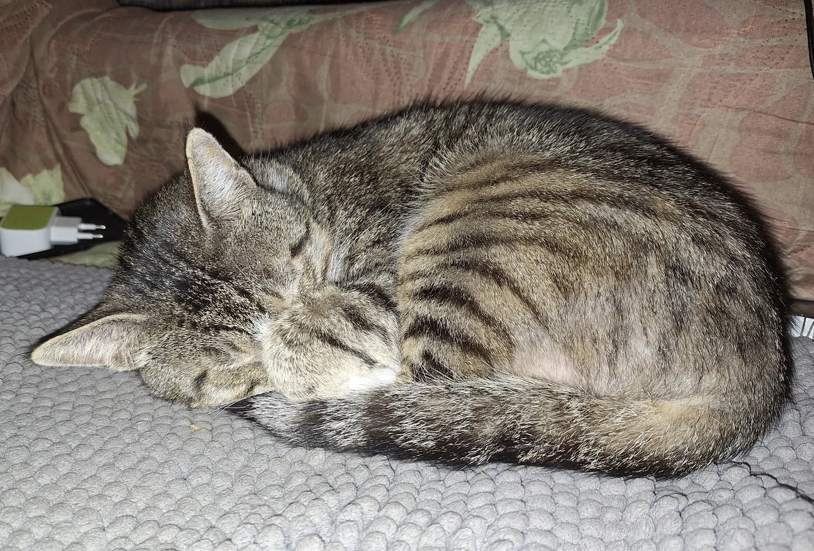

Help Pets
RU
EN
GE
Back to pet list
Kotik
Street cat from Tbilisi
Tbilisi
Help needed
Описание
Full profile description will appear here.

Контакты куратора
Видео / Reel
Пожертвование
Перевести помощь
Pet not found. Return to the list and select another profile.